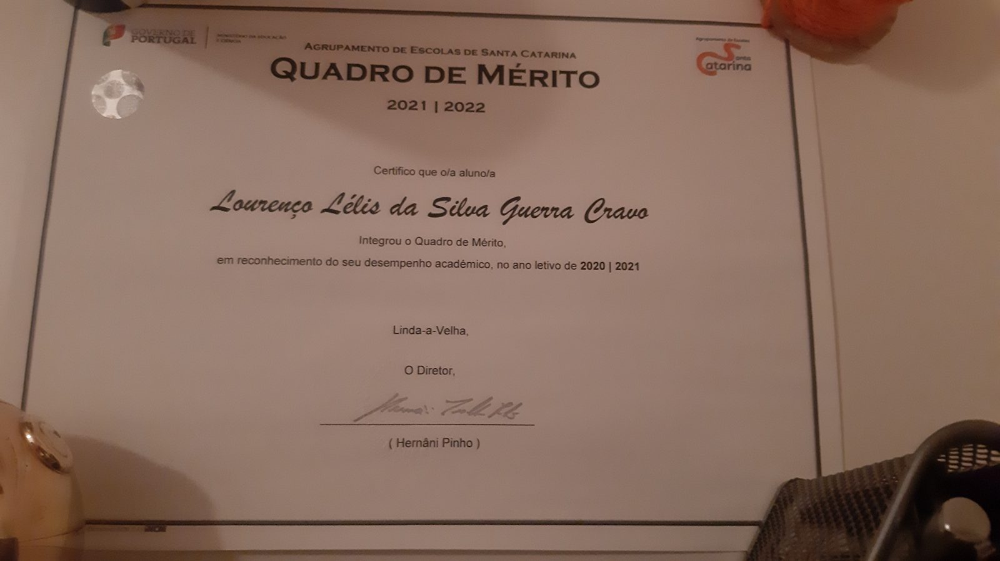
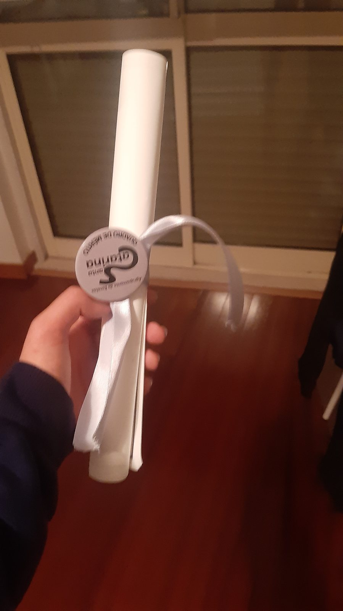

Quadro de Mérito 2020/2021
Agrupamento de Escolas de Santa Catarina, Linda-a-Velha
Integrei o Quadro de Mérito da escola em reconhecimento do meu desempenho académico no ano letivo de 2020/2021. A distinção foi-me entregue pelo diretor, Hernâni Pinho, no ano letivo seguinte.

